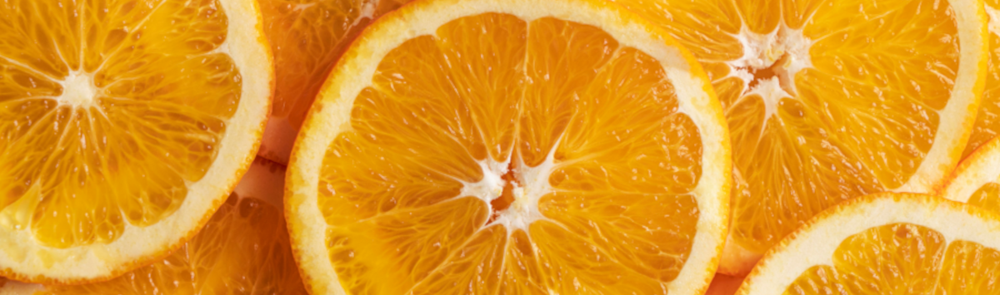
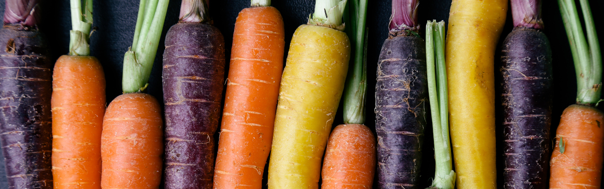

Seja Bem-Vindo!
Aqui no nosso site, você encontrará um mundo de receitas fáceis e práticas para transformar sua cozinha em um espaço de criatividade e sabor. Seja você um cozinheiro iniciante ou um entusiasta da culinária, nosso objetivo é tornar a preparação de refeições simples e agradável.
Curiosidades gastronômicas
Descubra o mundo fascinante da gastronomia com nossa seção de curiosidades! Aqui, você encontrará fatos interessantes, dicas surpreendentes e segredos sobre ingredientes e técnicas que podem transformar sua experiência na cozinha.
Você Sabia?
-
A fruta laranja apareceu antes da cor? O termo "laranja" tem suas raízes no sânscrito, na palavra "naranga", que se refere à árvore de laranja. Curiosamente, o uso da palavra para descrever a cor laranja só se popularizou no século XVI.
 -
Antes do século XVII, as cenouras eram majoritariamente roxas? Isso mesmo! As cenouras laranja, como as conhecemos hoje, só começaram a se popularizar depois desse período. Os agricultores começaram a cultivar cenouras de cores diferentes, selecionando variedades mutantes amarelas e brancas, que eventualmente levaram ao desenvolvimento da cenoura laranja que usamos com frequência. Assim, a cenoura laranja é na verdade um produto de seleções e cruzamentos feitos ao longo do tempo!
